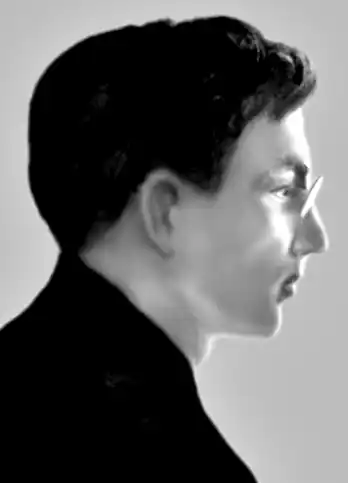
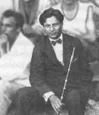

Петро Голота — це "людина 33 нещастя" двадцятих років. Народився він, іще один ровесник Донченка і Минка, з іменем Петро Іванович Мельник 1902 року в селі Балашовка. У різних джерелах написано, що це на Одещині або ж на Херсонщині, але нині це село в межах міста Кіровограда. Мікрорайон досі так і називається — Стара і Нова Балашівка.
Від назви малої батьківщини походять і перші псевдоніми Голоти — Балаш і Балашівський. Псевдонім Голота теж зрозумілий: багатодітна родина страшенно бідувала, батьки, брати й сестри наймитували. Звідки у нього псевдонім Маруся Башличка — одному богу відомо.
Змалку у хлопця проявилося художнє обдарування: він талановито малював і ліпив із глини. Та у дванадцять років його теж віддали в найми. Господарі йому трапилися жорстокі й немилосердні, і Петро вирішив укоротити собі віку, кинувшись під поїзд. "Розплющив очі, наче від міцного сну. Мене несли на носилках до санітарного вагону. Пахло аптекою. — Ну, как повреждєніє? — питає хтось когось. — Нічего. Жить будєт. Ущерб рєбра, лопаток. Ну, отнята рука… Заживьот. …Мене збило з рейки залізом, що низько висить перед колесом, і так я лежав між рейками, поки не переїхали всі вагони. — От, каналія… — Я повернув голову набік і побачив, як вусатий чоловік з кокардою на картузі ніс за пальчики мою жовту, жовту руку. Кров з неї капала на жовтий пісок і застигала чорними кружалками. Я крикнув і знепритомнів". Без лівої руки він продовжував малювати, ліпити, писав вірші. Його талант помітили багаті меценати і влаштували до Єлисаветградської чоловічої гімназії. Слізна історія про те, як він навчився читати й писати, випасаючи череду, та екстерном складав іспити за середню школу, правдива тільки наполовину. Під кінець навчання Мельник перейшов у щойно відкриту українську гімназію й одночасно відвідував вечірні технічні курси. Тоді ж таки почав друкуватися в місцевих виданнях під псевдонімом Голота, вступив до комсомолу, працював інструктором, організовував комсомольські осередки в провінції. Як поет незабаром прославився на весь Єлисаветград: "Коли яка редакція одмовляється друкувати, повітком комсомолу пише на віршеві резолюцію: "Нємєдлєнно напєчатать. Стіхотворєніє насквозь пропітано рєволюционним духом. Нєнапєчатаніє свідєтєльствуєт о вашем уклонє от своіх обязанностєй"". Уже 1921 року вийшла перша збірка віршів "Тернистий шлях до волі й освіти", яку видав Єлисаветградський повітком КП(б)У. Інформацію про те, що у 1921–1923 роках Голота відвідував літературний семінар Валерія Брюсова в Москві, ніщо не підтверджує, хоча єлисаветградські комуністи цілком могли влаштувати йому таке стажування. Натомість він вступає до Спілки селянських письменників "Плуг" заледве не з самого початку її існування, з 1923 року активно друкується у харківській періодиці — спершу пише вірші, а далі й прозу, — зрештою, і сам перебирається до столиці — бачимо його на фото початку 1920-х років поруч із Хвильовим, Йогансеном, Гжицьким. У 1927 році Голота вступив до рідної серцю комсомольської організації "Молодняк". Порівняно з початківцями у нього був уже солідний доробок: збірки віршів "Степи — заводові" (1925) та оповідань "В дорозі змагань" (1925). Про вірші його Йогансен писав: "Єсть у книжечці спроби дати народнопісенний стрій, спроби слабі, непророблені, але цікаві своєю непосередністю". Голота далі й працював у дешевенькому народнопісенному напрямі — то "Пісня під гармонію" (1928), то "Піонер-частушки" (1930), то "Приповістки" (1930), "Колгоспівські приповістки" (1931) тощо. Прозу писав із життя молоді, сільської, міської, комсомольців, інтелігенції, часто автобіографічну, як-от повісті "Далина" і "Аль-кегаль". Комсомольські письменники мали з Голотою безліч проблем. У газеті "Комсомолець України" регулярно з’являлися повідомлення про його пристрасть до алкоголю, письменник навіть двічі сидів у бупрі за п’янство. Відповідні спогади залишилися у Юрія Смолича: "Коли вийшла друком "Фальшива Мельпомена" (року 28 чи 29, либонь?), мене перестрів (у приміщенні, в коридорі "Робітничої газети") Петро Голота, трохи п’яненький, і, плачучи, почав вихваляти мій роман та признаватися, що він і є персонаж із цього роману, якого роздирають противенства й суперечки з самим собою, словом — наголошував на своїх націоналістичних настроях. Років десять пізніше (коли масово відбувалися арешти поміж письменників), колись на якомусь вечорі в клубі письменників (вже не в будинку Блакитного, а на Чернишевській, 39) Голота в буфеті, добре підпивши, знову плакав, признаючись мені, що він секретний співробітник ДПУ, з його вказівки арештовано чимало письменників і що він цим катується. Невдовзі він завішувався (із зашморгу його витяг Бузько)". Докладніше занотував у щоденнику 1931 року Іван Дніпровський: "20.I 1931. Покінчив з собою П. Голота. 21.I 1931. Петро Голота — живий. Дуже добре. 24.I 1931. Прочитав у місцевкомі листа П. Голоти з Радлікарні ім. Леніна — після оживлення: Почав пити 1925 року. Пивнушки, самота. Одрив од життя. Подавав до ВУСППу — одмовлено. Подавав до Плугу — також. Книжки для бібліотек — заборонено. Брак товариства, уваги. Сімейні нелади. В Донбасі — не найшов застосовання сил. "Книжок Голоти — не рецензую". Письменники — на купки. Ворожнеча. Наївно, але глибоко, правдиво. Тепер Голоті дають громадське навантаження". З 1932 року Голота не друкувався. Проте й інформація про його репресії, яка з’явилася зовсім недавно, не має документального підтвердження і викликає великі сумніви. Людина, котра перед самою війною звільнилася з неволі, як пише Вікіпедія, не може працювати на прифронтовій радіостанції "Дніпро", а після визволення Харкова — в обласній газеті "Соціалістична Харківщина". Донедавніх в’язнів не посилали одразу по війні в Західну Україну, їм "світили" переважно штрафбати. Можна припустити, що письменник справді співпрацював з органами, і тому у його біографії з’явилася ця загадкова біла пляма на десять років. З 1944 року Петро Голота жив у Снятині, працював у газеті "Ленінська правда", директором піонерклубу, їздив у будинок відпочинку, ілюстрував твори Марка Черемшини, а 1948-го вийшов на пенсію. З цього періоду серед інших його творів в архіві збереглася п’єса "Отаманська схрона" (1947). Помер письменник 8 листопада 1949 року.